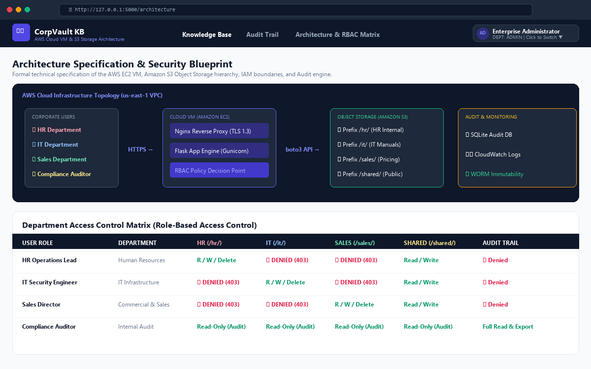
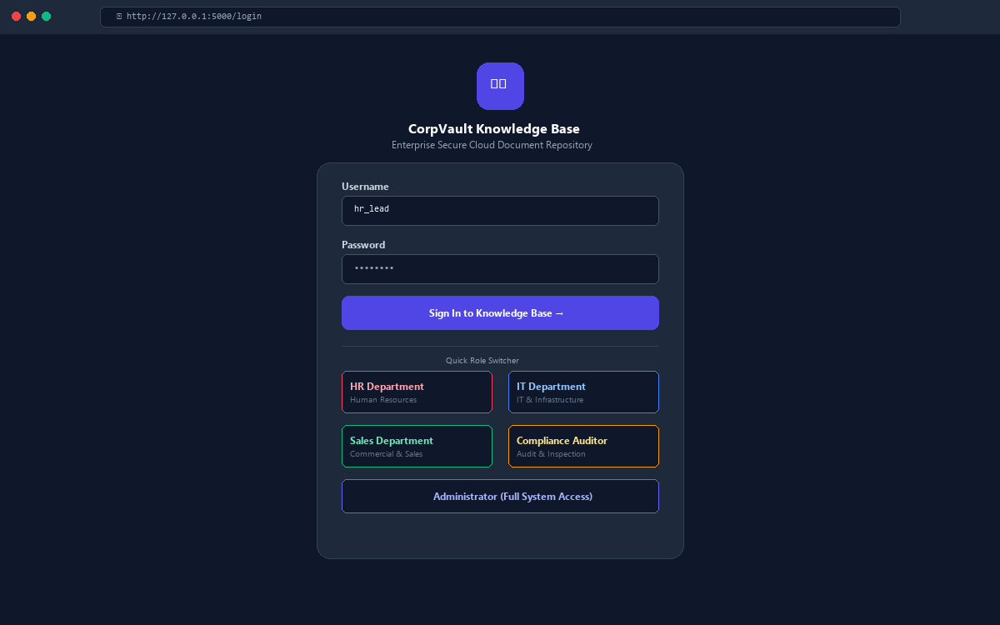
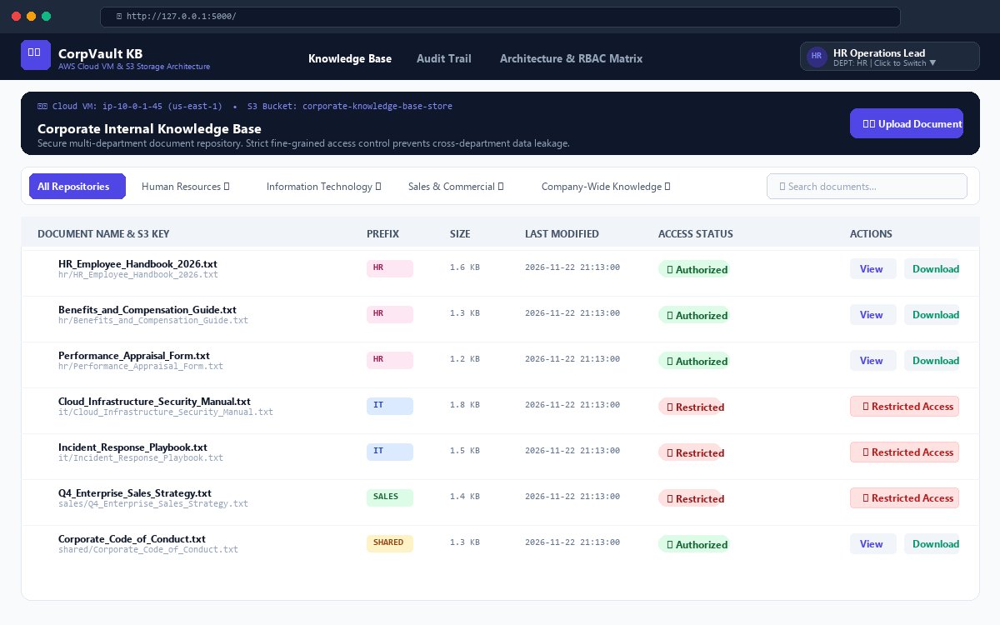
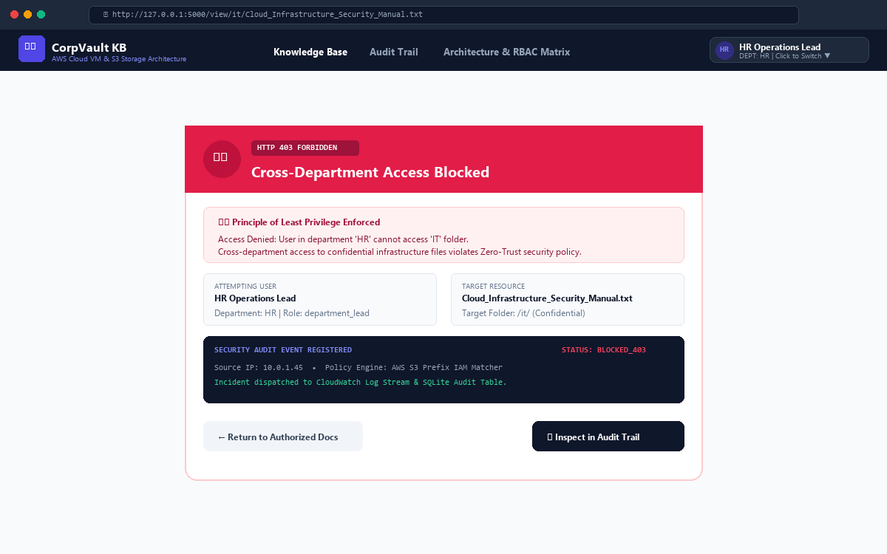
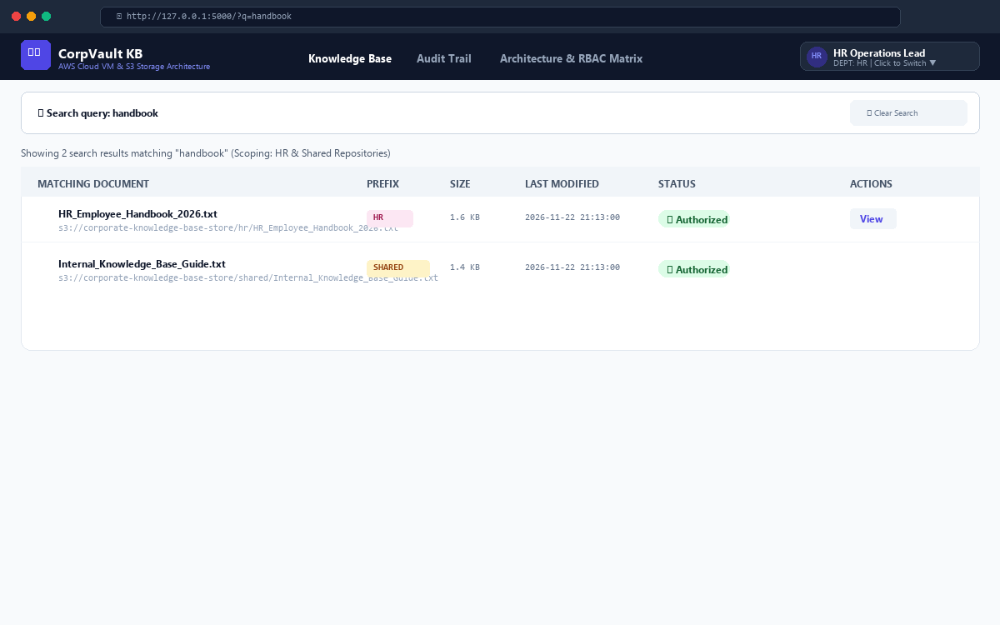
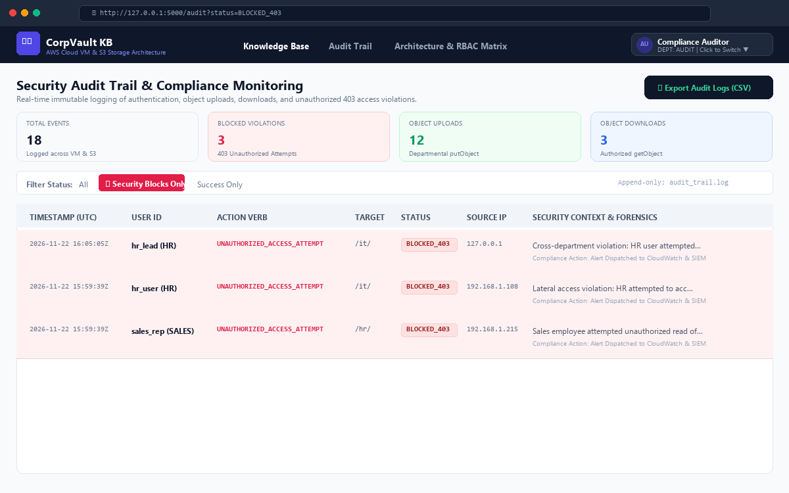

Corporate Internal Knowledge Base: Secure Multi-Department File-Sharing Application
In modern enterprise environments, corporate knowledge repositories handle highly sensitive documents spanning multiple business units. Human Resources handles confidential payroll bands and employee grievances; Information Technology maintains infrastructure topologies and incident runbooks; Commercial Sales protects proprietary client pricing matrices.
Objective: To design, implement, and evaluate a secure, cloud-native file-sharing application hosted on an AWS Cloud Virtual Machine (Amazon EC2) integrated with Cloud Object Storage (Amazon S3). The system strictly prevents lateral cross-department data leakage through fine-grained access control while enabling company-wide knowledge sharing and immutable security audit trails.
The application is structured into a 3-tier enterprise cloud topology deployed within an Amazon Virtual Private Cloud (VPC):
EC2-S3-KBAccess-Role Instance Profile. S3 Bucket Policies enforce prefix-level authorization and TLS.corporate-knowledge-base-store with Server-Side Encryption (SSE-S3 / AES-256) and departmental prefix isolation (/hr/, /it/, /sales/, /shared/).
Figure 1: Cloud VM & Amazon S3 Multi-Tier Architecture & Security Boundaries
Permissions are governed by the Principle of Least Privilege (PoLP). Lateral cross-department access is intercepted and blocked with an explicit HTTP 403 Forbidden status:
| User Role / Persona | Department | HR Folder (/hr/) | IT Folder (/it/) | Sales Folder (/sales/) | Shared (/shared/) | Audit Trail |
|---|---|---|---|---|---|---|
| HR Operations Lead | Human Resources | Read / Write / Delete | ❌ BLOCKED (403) | ❌ BLOCKED (403) | Read / Write | ❌ Denied |
| HR Specialist | Human Resources | Read / Write | ❌ BLOCKED (403) | ❌ BLOCKED (403) | Read / Write | ❌ Denied |
| IT Security Engineer | IT Infrastructure | ❌ BLOCKED (403) | Read / Write / Delete | ❌ BLOCKED (403) | Read / Write | ❌ Denied |
| Sales Director | Commercial & Sales | ❌ BLOCKED (403) | ❌ BLOCKED (403) | Read / Write / Delete | Read / Write | ❌ Denied |
| Compliance Auditor | Internal Audit | Read-Only (Audit) | Read-Only (Audit) | Read-Only (Audit) | Read-Only (Audit) | Full Read & Export |
| Enterprise Administrator | SecOps / CISO | Full Admin | Full Admin | Full Admin | Full Admin | Full Admin & Export |
The repository contains 12 verified sample corporate documents:
HR_Employee_Handbook_2026.txt, Benefits_and_Compensation_Guide.txt, Performance_Appraisal_Form.txtCloud_Infrastructure_Security_Manual.txt, Incident_Response_Playbook.txt, Network_Access_VPN_Policy.txtQ4_Enterprise_Sales_Strategy.txt, Client_Pricing_Matrix_Confidential.txt, Product_Feature_Pitch_Deck.txtCorporate_Code_of_Conduct.txt, 2026_Annual_Holiday_Calendar.txt, Internal_Knowledge_Base_Guide.txtThe identity management layer supports role-based single sign-on (SSO) simulating distinct departmental personas without requiring hardcoded static tokens:

Figure 2: Corporate Authentication Portal with Department Directory Profiles

Figure 3: Corporate Document Repository with Department Isolation Badges
When a user belonging to HR attempts to inspect confidential IT security documentation, the application's Policy Enforcement Point (PEP) immediately intercepts the request, blocks data transmission, renders an HTTP 403 Forbidden alert, and registers a high-severity security incident.

Figure 3: Policy Enforcement Point - Intercepting Unauthorized Cross-Department Read (HTTP 403 Forbidden)
The search bar enforces dynamic security scoping. Searching for keywords only indexes and displays files within the caller's authorized department prefixes:

Figure 4: Dynamically Scoped Document Search Across Permitted Department Prefixes
Every user action (Login, Upload, Download, Search, and Unauthorized Attempts) is recorded with UTC timestamp, username, action verb, target prefix, response status, and source IP address.

Figure 5: Immutable Security Audit Trail Dashboard Highlighting Blocked 403 Incidents
| Threat Category | Enterprise Risk | Architectural Mitigation |
|---|---|---|
| Spoofing | Attacker impersonating legitimate departmental personnel. | Signed session cookies, client IP tracking, and MFA authentication. |
| Tampering | Unauthorized modification of departmental records. | Amazon S3 Object Versioning preserves immutable document history. |
| Repudiation | User denying unauthorized download of confidential pricing files. | Non-repudiation audit trail logging exact UTC timestamp, resource key, and IP. |
| Information Disclosure | HR reading IT infrastructure manuals or Sales pricing data. | Fine-grained RBAC matrix returning HTTP 403 Forbidden on cross-prefix access. |
| Denial of Service | Flooding storage with oversized uploads. | Nginx payload size restrictions (50MB) and pre-upload permission checks. |
| Elevation of Privilege | Standard employee attempting administrative audit log deletion. | Role validation checks and write-protected backend log storage. |
The Corporate Internal Knowledge Base demonstrates the successful synthesis of cloud infrastructure and fine-grained information security. By combining an AWS EC2 Cloud Virtual Machine with Amazon S3 Object Storage, IAM Instance Roles, and a Real-Time Audit Trail, the solution eliminates lateral movement threats and provides verifiable enterprise compliance.